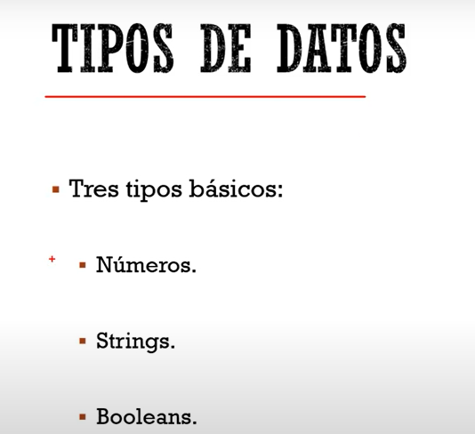
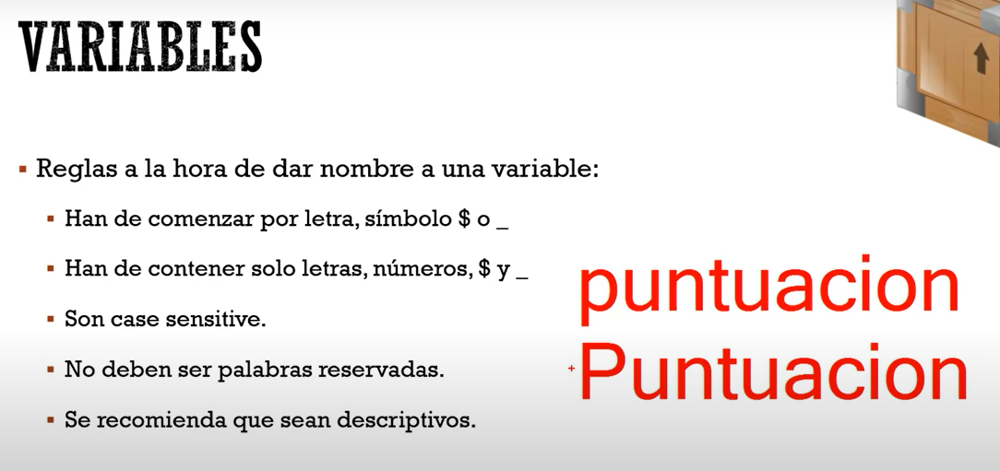
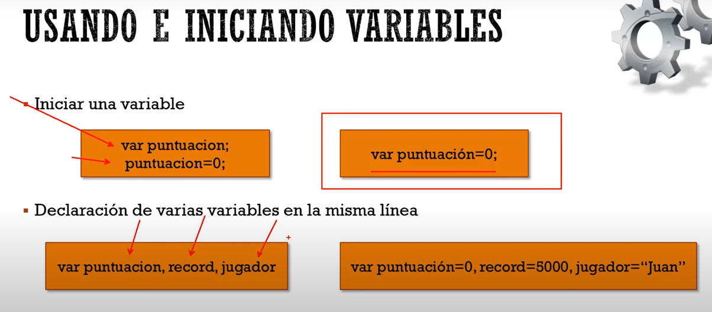
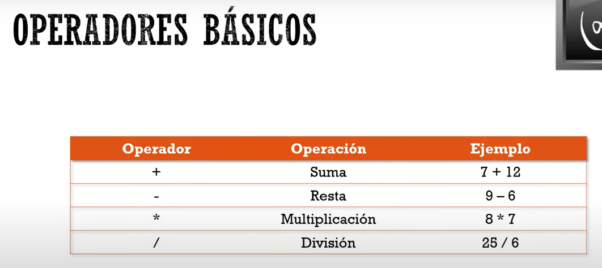
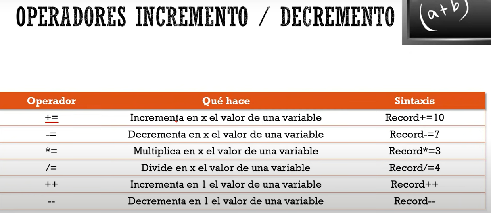

Tipos de datos:
En Js se manejan tres tipos de datos:

Crear variables:


Operadores Básicos:

Concatenación:
Para la concateción se utiliza el signo " + ", igual que en Java. Así mismo los comentarios se realizan con
"//" para una línea ó "/*...*/" para comentar un bloque de instrucciones.
Operadores de incremento:
